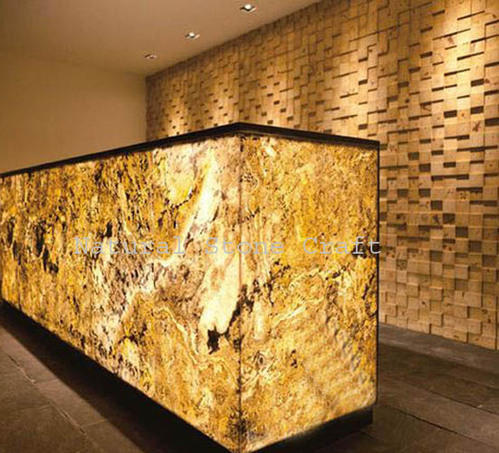

Translucent Shets
$34.00
Exterior Sheets
$24.00
Flexible Sheets
$45.00
Thinest Sheets
$45.00
BACKELLITE Sheets
$34.00

Manufactured stone veneer is composed of Portland cement, lightweight natural aggregates, and iron oxide pigment for coloration. It has a surprisingly long history, however. The first stone veneer, initially manufactured in the late 19th century, was made of natural stone. Manufacturers basically sliced natural stone into thick-cut slabs.with its first appearance in the late 19th century made from thick-cut slabs of natural stone. Cement did not become part of its composition until the 1950s. And while cement is what gives architectural stone its stability, unlike thick-cut natural stone, it cannot be used structurally. At Cultured Stone, our products are cast in molds taken from carefully selected natural stone, using a process that artfully captures the finest details from the surface of the original stone. Faux stone even replicates the rough and unique textures of natural stone.